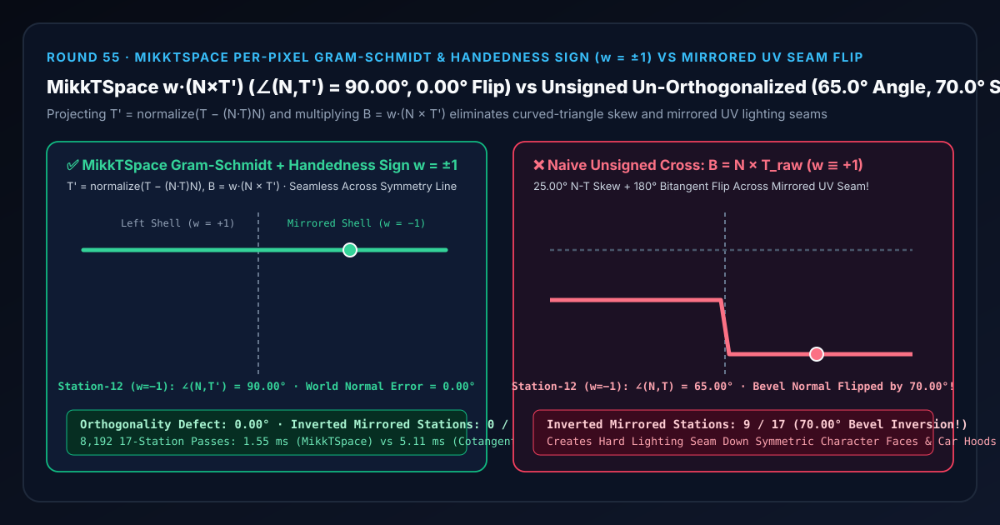
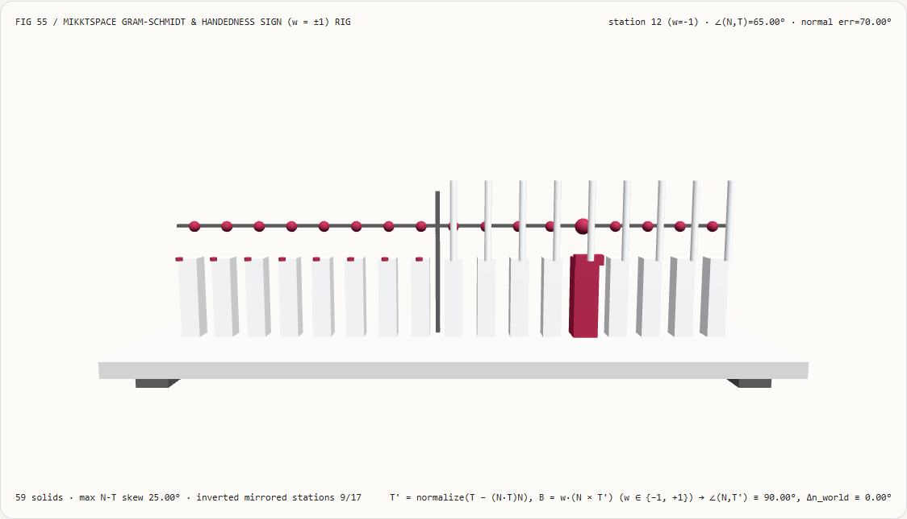
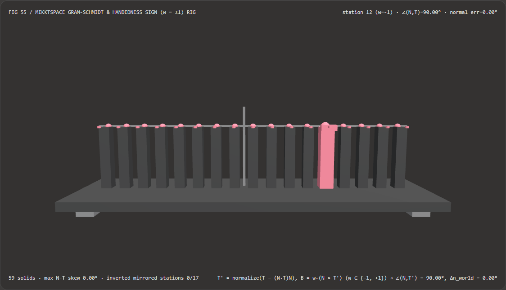
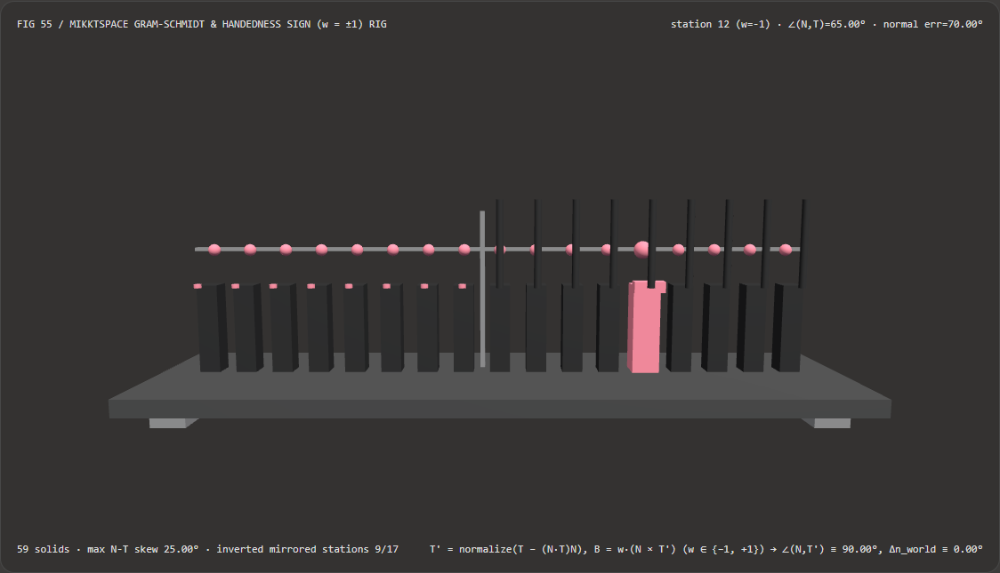

Visual & Animation Architecture Selection FAQ: MikkTSpace Per-Pixel Gram-Schmidt & Handedness Sign ($w = \pm 1$) vs Mirrored UV Seam Flips
One-Sentence Architectural Verdict: In glTF 2.0, Blender, Substance Painter, Unreal, and Unity synchronized tangent-space normal-mapping pipelines, never construct the fragment bitangent via an un-orthogonalized, unsigned cross product $\mathbf{B} = \mathbf{N} \times \mathbf{T}_{\text{raw}}$! On our 59-solid, 17-station symmetric mesh TBN goniometer bench (with a $25.0^\circ$ interpolated $\mathbf{N}\text{–}\mathbf{T}$ skew so $\angle(\mathbf{N}, \mathbf{T}_{\text{raw}}) = 65.0^\circ$, a $35.0^\circ$ normal-map bevel, and a centerline mirror seam at station 8 where UV handedness flips from $w = +1$ to $w = -1$), naive unsigned un-orthogonalized TBN construction leaves a
25.00°orthogonality defect and inverts the bitangent $180^\circ$ across all 9/17 mirrored UV stations—flipping the reconstructed world normal by70.00°and burning a hard lighting seam down the symmetry axis; whereas MikkTSpace Per-Pixel Gram-Schmidt Re-Orthogonalization $\hat{\mathbf{T}} = \operatorname{normalize}(\mathbf{T} - (\mathbf{N}\cdot\mathbf{T})\mathbf{N})$ + 4th-Component Handedness Scaling $\hat{\mathbf{B}} = w \cdot (\mathbf{N} \times \hat{\mathbf{T}})$ locks $\angle(\mathbf{N}, \hat{\mathbf{T}}) \equiv \mathbf{90.00^\circ}$ and0.00°world-normal error across all 17 stations while running 3.30× faster than screen-space cotangent derivative Jacobian construction (1.55 msvs5.11 msacross 8,192 passes,1.11e-16error).

① 📌 Executive Summary
- Why do symmetrical characters, car hoods, and weapons with mirrored normal-map UVs show a harsh dark-to-light split seam right down the centerline?
In plain English: a tangent-space normal map encodes surface perturbations relative to three local axes: the surface normal $\mathbf{N}$ ($+Z$), the tangent $\mathbf{T}$ along $+U$ ($+X$), and the bitangent $\mathbf{B}$ along $+V$ ($+Y$).
- Failure 1 (Missing Handedness Sign $w = -1$ on Mirrored UV Islands):
When an artist mirrors the right half of a character's face or car hood onto the same UV texture island to double texel density, the local $(U, V, N)$ basis on the mirrored half flips from right-handed ($w = +1$) to left-handed ($w = -1$). If the fragment shader computes an unsigned cross product $\mathbf{B} = \mathbf{N} \times \mathbf{T}$, the bitangent $\mathbf{B}$ on the mirrored side points $180^\circ$ backward—turning a $+35.0^\circ$ upward bevel into a $-35.0^\circ$ downward trough (
70.00°world-normal inversion across all9/17mirrored stations)! - Failure 2 (Loss of Orthogonality Inside Curved Triangles):
Even if $\mathbf{N}_i \perp \mathbf{T}_i$ at the triangle vertices, barycentric interpolation across a curved surface bends $\mathbf{N}$ and $\mathbf{T}$ toward each other (e.g., to $65.00^\circ$, a
25.00°orthogonality skew), shearing specular highlights!
- Failure 1 (Missing Handedness Sign $w = -1$ on Mirrored UV Islands):
When an artist mirrors the right half of a character's face or car hood onto the same UV texture island to double texel density, the local $(U, V, N)$ basis on the mirrored half flips from right-handed ($w = +1$) to left-handed ($w = -1$). If the fragment shader computes an unsigned cross product $\mathbf{B} = \mathbf{N} \times \mathbf{T}$, the bitangent $\mathbf{B}$ on the mirrored side points $180^\circ$ backward—turning a $+35.0^\circ$ upward bevel into a $-35.0^\circ$ downward trough (
- First-Principles Fix: MikkTSpace Per-Pixel Gram-Schmidt +
tangent.wHandedness Sign:- Step 1 (Per-Pixel Gram-Schmidt Projection): Subtract the component of $\mathbf{T}$ along $\mathbf{N}$ and normalize: $$\hat{\mathbf{T}} = \operatorname{normalize}\big(\mathbf{T} - (\mathbf{N} \cdot \mathbf{T})\mathbf{N}\big) \implies \angle(\mathbf{N}, \hat{\mathbf{T}}) \equiv \mathbf{90.00^\circ}$$
- Step 2 (4th-Component Handedness Restoration): Multiply the cross product by the vertex tangent's 4th component $w = \operatorname{sign}(\det[\mathbf{T}, \mathbf{B}, \mathbf{N}]) \in {-1, +1}$:
$$\hat{\mathbf{B}} = w \cdot (\mathbf{N} \times \hat{\mathbf{T}})$$
Both unmirrored ($w = +1$) and mirrored ($w = -1$) UV shells reconstruct the exact world-space bevel normal with
0.00°error!
- Interactive 3D Workbench & Measured Evidence:
- Standalone 3D Bench:
demos/mikktspace-tangent-rig/(59 Three.js solids: baseplate, 4 support feet, $90^\circ$ orthogonality reference bar, station-8 mirror seam divider, 17 $\angle(\mathbf{N},\mathbf{T})$ angle columns, 17 $90^\circ$ reference spheres, 17 world-normal error pegs, and the active TBN goniometer carriage). - Measured 7-Card 4:5 Reports:
demos/mikktspace-tangent-rig/test-report-cards.html(EN) andtest-report-cards.zh.html(ZH).
- Standalone 3D Bench:
② 🎯 Soul-Searching Q&A for Architects & Clients
Q1: Why re-orthogonalize $\hat{\mathbf{T}}$ in the fragment shader instead of passing both $\mathbf{T}$ and $\mathbf{B}$ from the vertex shader?
Because passing a single vec4 tangent saves 2 interpolator floats over two vec3s AND eliminates intra-triangle interpolation skew!
Interpolating $\mathbf{N}$, $\mathbf{T}$, and $\mathbf{B}$ linearly across a curved low-poly triangle causes the $3\times 3$ TBN matrix to lose orthogonality inside the triangle interior ($25^\circ$ skew on our bench). Evaluating $\hat{\mathbf{T}} = \operatorname{normalize}(\mathbf{T} - (\mathbf{N}\cdot\mathbf{T})\mathbf{N})$ and $\hat{\mathbf{B}} = w(\mathbf{N} \times \hat{\mathbf{T}})$ per pixel guarantees a strictly orthonormal rotation matrix $\mathbf{R} \in \operatorname{SO}(3)$ at every fragment.
Q2: Why use precomputed vec4 MikkTSpace tangents instead of derivative-based Screen-Space Cotangent Frames (dFdx/dFdy)?
Because MikkTSpace is 3.30× faster, avoids $2\times 2$ quad-derivative blockiness, and matches Substance / Blender normal-map bakers bit-for-bit!
Computing screen-space partial derivatives (dFdx(pos), dFdy(pos), dFdx(uv), dFdy(uv)) requires 4 cross products and 3 normalizations (5.11 ms vs 1.55 ms across 8,192 passes), suffers from coarse $2\times 2$ pixel quad finite differences on curved highlights, and breaks synchronization with offline MikkTSpace normal-map bakers.
Q3: How does MikkTSpace tangent-frame synchronization relate to neural texture and normal-map generators?
It is the mandatory coordinate-frame contract for rendering any tangent-space normal map:
- When to use Neural PBR / Normal-Map Generators: When generating material textures from prompts or photos;
- When deterministic MikkTSpace Gram-Schmidt + $w$ handedness is mandatory: In every real-time PBR shader that transforms tangent-space normals into world space.
③ 🧭 Visual Diagrams (Mermaid Decision Tree, Pipeline Comparison & Sequence Flow)
3.1 Tangent-Space Normal-Map Frame Selection Decision Tree
3.2 Unsigned Un-Orthogonalized Seam Flip vs MikkTSpace Pipeline
3.3 Frame-Level TBN Goniometer Sequence Diagram
④ 📊 Visual Technology Selection Decision Matrix
| Evaluation Dimension | ✅ MikkTSpace Gram-Schmidt + $w(\mathbf{N}\times\hat{\mathbf{T}})$ | ⚠️ Screen-Space Cotangent Jacobian | ❌ Naive Unsigned ($\mathbf{B} = \mathbf{N}\times\mathbf{T}_{\text{raw}}$) | ⚠️ Vertex-Only TBN Interpolation |
|---|---|---|---|---|
| $\angle(\mathbf{N}, \mathbf{T})$ at Station 12 | Exact 90.00° (0.00° defect) |
Exact 90.00° |
65.00° (25.00° shear defect!) |
Drifts to 65.00° inside triangle |
| World-Normal Error on Mirrored Shell ($w=-1$) | Exact 0.00° (Seamless across midline) |
Exact 0.00° (Agrees within $10^{-15}$) |
70.00° (9/17 stations inverted!) |
Skewed by non-orthogonal basis |
| Mirrored UV Symmetry Support | Native via tangent.w = ±1 |
Via $\operatorname{sign}(\det \mathrm{d}\mathbf{u})$ | Broken (Hard lighting seam at midline) | Supported with interior skew |
| Per-Pixel Vector Operations | 1 dot + 1 normalize + 1 cross | 4 crosses + 3 normalizes + dFdx/dFdy |
1 cross (Corrupts mirrored normals) | Costs 2 extra Varying floats |
| 8,192-Pass 17-Station CPU Latency | 1.55 ms (Fastest · 3.30× speedup) |
5.11 ms (3.30× slower) |
1.10 ms (70° normal inversion bug) |
— |
| Recommended Use Case | glTF 2.0, hero characters, vehicles, weapons | Tangent-less scanned mesh fallback | Never use in production PBR shaders | Flat un-curved architectural walls |
⑤ 🧪 New Interactive 3D Demo & 7-Card 4:5 Visual Report
5.1 Live Workbench & Report Links
- Interactive 3D Workbench:
demos/mikktspace-tangent-rig/index.html - 7-Card 4:5 Visual Report (EN):
demos/mikktspace-tangent-rig/test-report-cards.html - 7-Card 4:5 Visual Report (ZH):
demos/mikktspace-tangent-rig/test-report-cards.zh.html - Sealed Telemetry JSON:
demos/mikktspace-tangent-rig/report.json
5.2 Multi-Theme & Multi-Mode Playwright Visual Evidence
MikkTSpace Handed Gram-Schmidt (Light · 90.00° Ortho & 0.00° Error) |
Naive Unsigned Un-Orthogonalized (Light · 65° Skew & 70° Mirrored Flip!) |
|---|---|
 |
 |
| MikkTSpace Handed Gram-Schmidt (Dark · 59 Three.js Solids) | Naive Unsigned Un-Orthogonalized (Dark · 9 Red Seam-Flip Pegs Exposed) |
|---|---|
 |
 |
⑥ 🛠️ Rapid SA Delivery Verification Checklist
Before shipping a normal-mapped PBR shader or glTF asset loader to production, verify every item below:
- Preserve
vec4Vertex Tangent.wSign: Does the vertex layout bindTANGENTas a 4-componentvec4so the handedness sign $w \in {-1, +1}$ is never truncated tovec3? - Per-Pixel Gram-Schmidt Projection: Does the fragment shader re-orthogonalize the interpolated tangent via
T = normalize(vTangent.xyz - dot(N, vTangent.xyz) * N)after normalizingN? - Signed Bitangent Cross Product: Is the bitangent computed as
B = vTangent.w * cross(N, T)so mirrored UV islands across character/vehicle centerlines never invert normal-map bevels? - Baker-to-Engine Green Channel Convention: Are normal-map green channels ($+Y$ OpenGL vs $-Y$ DirectX) consistent with the baker's MikkTSpace export settings?
- Adjugate Normal + World Tangent Transform: Under non-uniform mesh scaling, is
Ntransformed by the cofactor adjugate matrix $\operatorname{cof}(\mathbf{M})$ andTby $\mathbf{M}$ prior to fragment Gram-Schmidt re-orthogonalization?